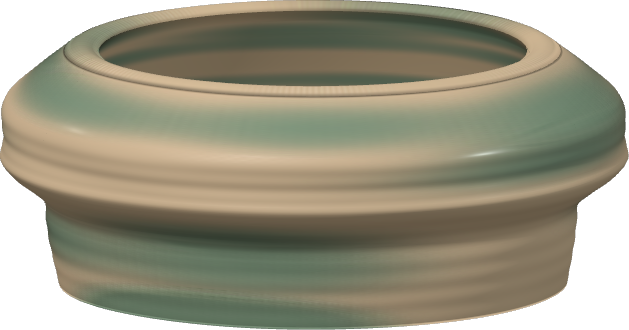
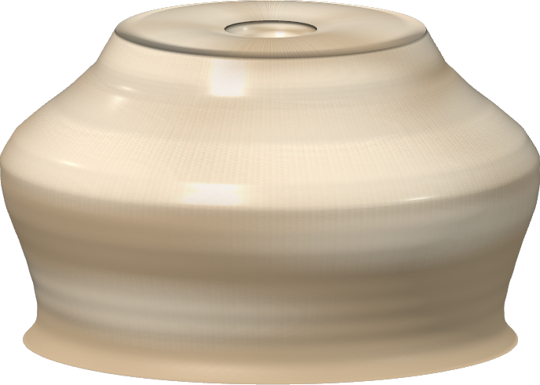
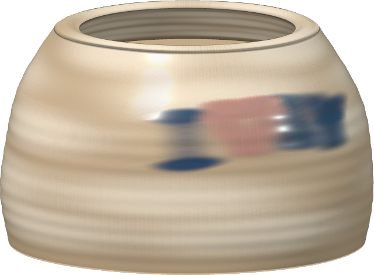

Three studio attempts
Made with the current studio’s Hands, Sponge and Brush, then fired and exported. These are the actual results of trying to make specific pieces.

Green matcha bowl
Wide opening, low form, celadon glaze. The shoulder is heavier than a typical chawan.
Save bowl PNG ↓
Bone-white moon jar
Small opening and Chalk glaze. The silhouette is more shouldered than truly spherical.
Save jar PNG ↓
I ♥ NY mug attempt
The cup is open, but there’s no handle tool. The smallest brush blurred the lettering and heart.
Save cup PNG ↓